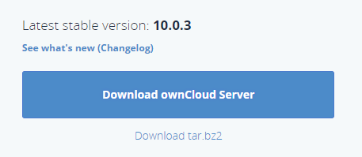
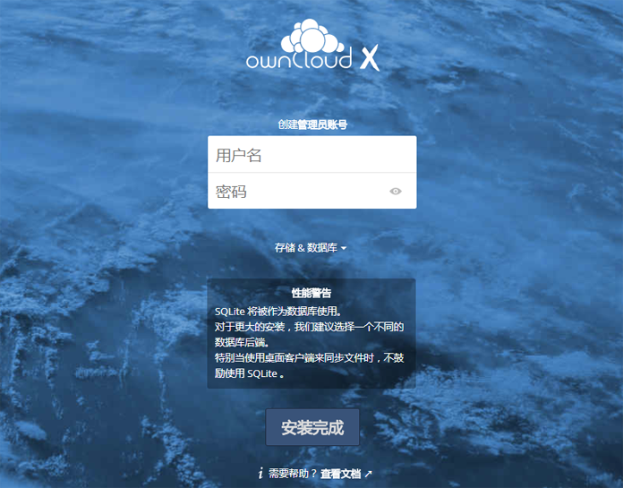

具体安装步骤见如下链接 :
http://blog.csdn.net/tojohnonly/article/details/68938846
在 OwnCloud 官网 https://owncloud.org/install/ 下载 OwnCloudServer 安装包 , 如下图所示 :

然后解压到 CentOS 目录下 , 例如 : /usr/local/owncloud
安装的版本最好是 PHP 5.6 版本以上 , 我是直接官网下载的源码包 , 编译安装 , 具体步骤见下链接 :
http://blog.csdn.net/tojohnonly/article/details/78680633
我的 Nginx 安装在 /usr/local/nginx 目录 , 编辑配置文件 /usr/local/nginx/conf/nginx.conf :
# vim /usr/local/nginx/conf/nginx.conf
在 http 节点下新增 upstream php-handler 节点和 server 节点 , 内容如下所示 :
我设置监听的是 8080 端口
upstream php-handler {
server 127.0.0.1:9000;
#server unix:/var/run/php5-fpm.sock;
}
server {
listen 8080;
server_name cloud.example.com;
# Path to the root of your installation
root /usr/local/owncloud;
# set max upload size
client_max_body_size 10G;
fastcgi_buffers 64 4K;
# Disable gzip to avoid the removal of the ETag header
gzip off;
# Uncomment if your server is build with the ngx_pagespeed module
# This module is currently not supported.
#pagespeed off;
rewrite ^/caldav(.*)$ /remote.php/caldav$1 redirect;
rewrite ^/carddav(.*)$ /remote.php/carddav$1 redirect;
rewrite ^/webdav(.*)$ /remote.php/webdav$1 redirect;
index index.php;
error_page 403 /core/templates/403.php;
error_page 404 /core/templates/404.php;
location = /robots.txt {
allow all;
log_not_found off;
access_log off;
}
location ~ ^/(?:\.htaccess|data|config|db_structure\.xml|README){
deny all;
}
location / {
# The following 2 rules are only needed with webfinger
rewrite ^/.well-known/host-meta /public.php?service=host-meta last;
rewrite ^/.well-known/host-meta.json /public.php?service=host-meta-json last;
rewrite ^/.well-known/carddav /remote.php/carddav/ redirect;
rewrite ^/.well-known/caldav /remote.php/caldav/ redirect;
rewrite ^(/core/doc/[^\/]+/)$ $1/index.html;
try_files $uri $uri/ /index.php;
}
location ~ \.php(?:$|/) {
fastcgi_split_path_info ^(.+\.php)(/.+)$;
include fastcgi_params;
fastcgi_param SCRIPT_FILENAME $document_root$fastcgi_script_name;
fastcgi_param PATH_INFO $fastcgi_path_info;
fastcgi_pass php-handler;
}
# Optional: set long EXPIRES header on static assets
location ~* \.(?:jpg|jpeg|gif|bmp|ico|png|css|js|swf)$ {
expires 30d;
# Optional: Don't log access to assets
access_log off;
}
}
需要将 OwnCloud 目录给 Nginx 用户授权 :
# chown -R nginx:nginx /usr/local/owncloud/
启动 Nginx 和 PHP , 在浏览器输入主机的 IP , 如 192.168.22.37:8080 , 会载入 OwnCloud 的初始化界面 , 如下图所示 :

输入管理员的账户和密码 , 点击完成 , 就会进入到云盘主页了